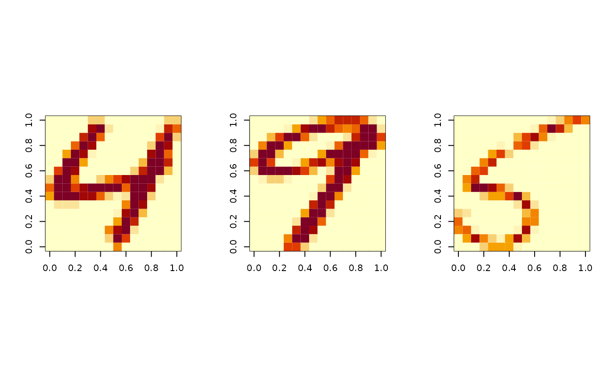

The well-known USPS handwritten digits from "0" to "9". Though the original version of each digit is given as a \(16\times 16\) matrix of grayscale image, it is convention to vectorize it. For each digit, 1100 examples are given.
data(usps)a named list containing
an \((11000\times 256)\) matrix where each row is a number.
(factor) a length-\(11000\) class label in \(0,1,\ldots,9\).
# \donttest{
# load the data
data(usps)
# visualize
opar <- par(no.readonly=TRUE, mfrow=c(1,3), pty="s")
image(t(matrix(usps$data[4400,],nrow=16)[16:1,])) # last of digit 4
image(t(matrix(usps$data[9900,],nrow=16)[16:1,])) # last of digit 9
image(t(matrix(usps$data[6600,],nrow=16)[16:1,])) # last of digit 6

par(opar)
# }